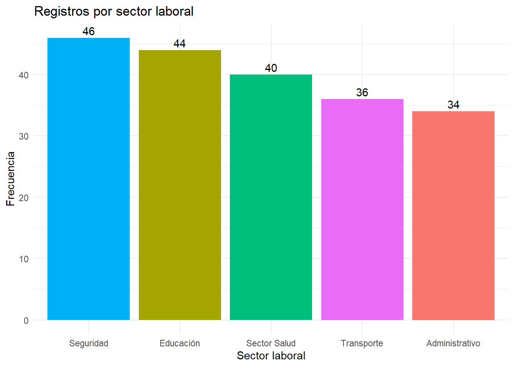
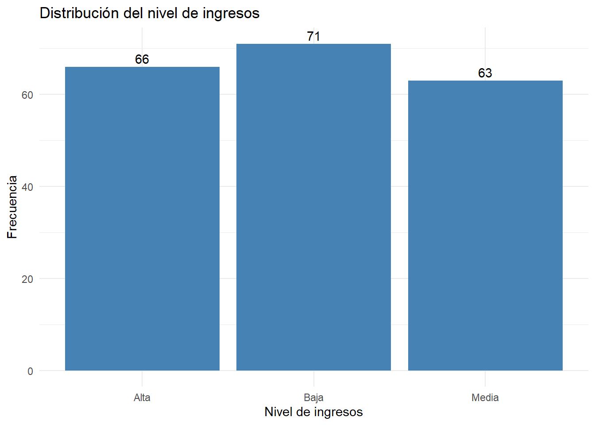
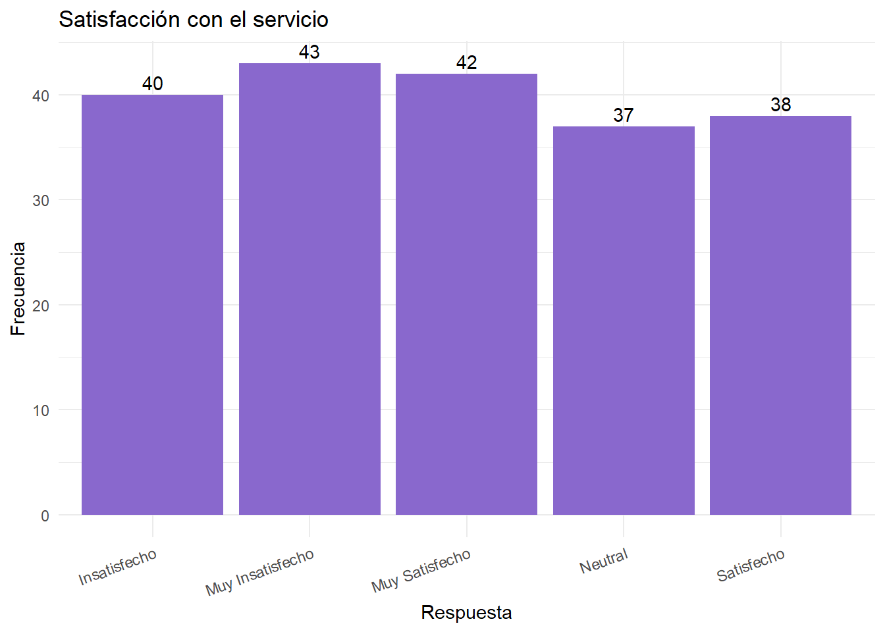
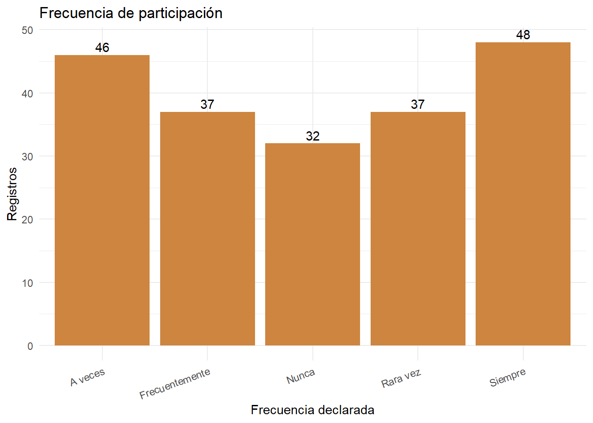
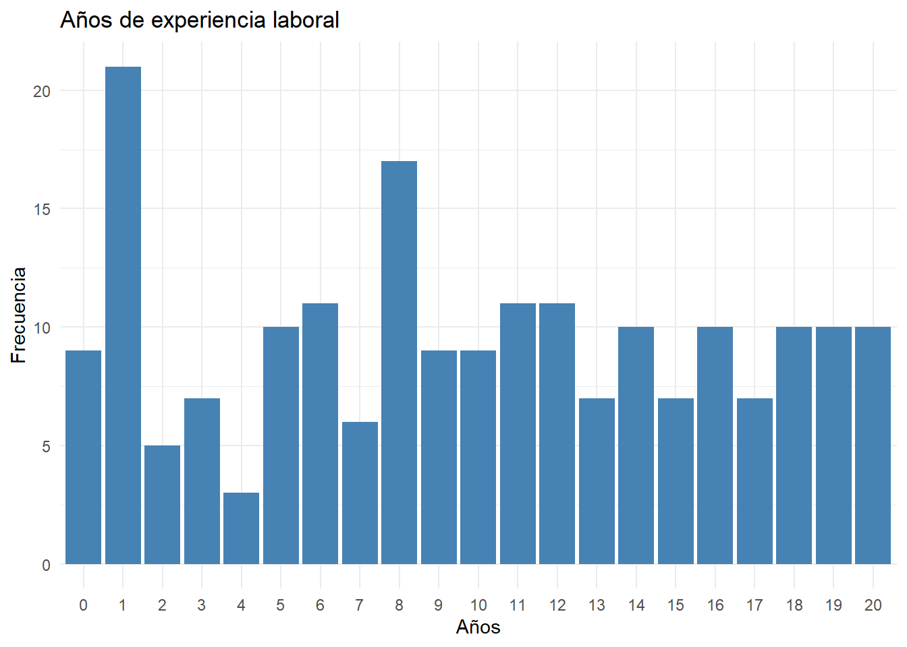
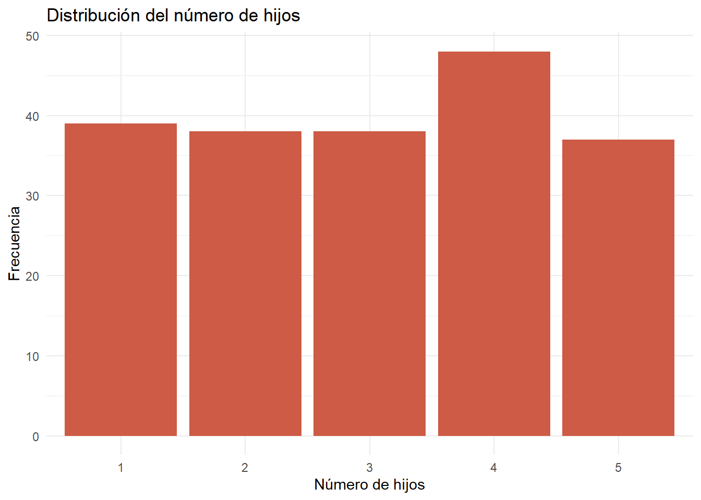
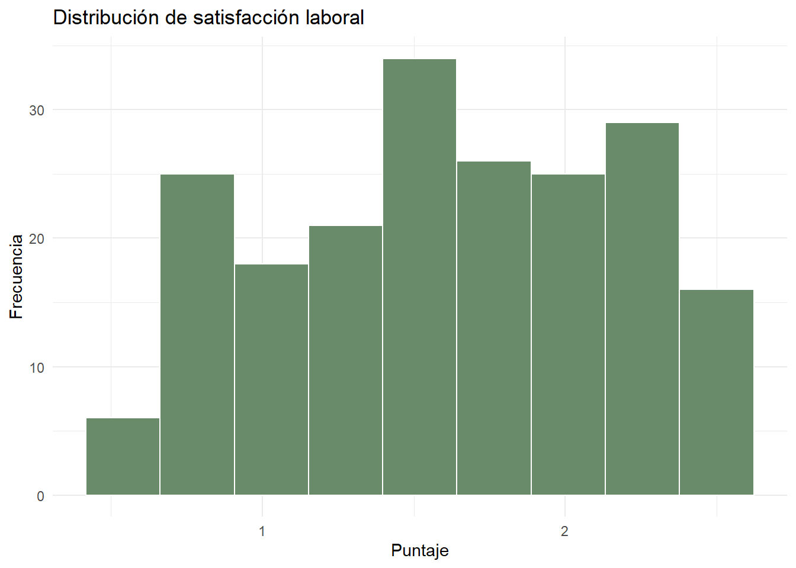
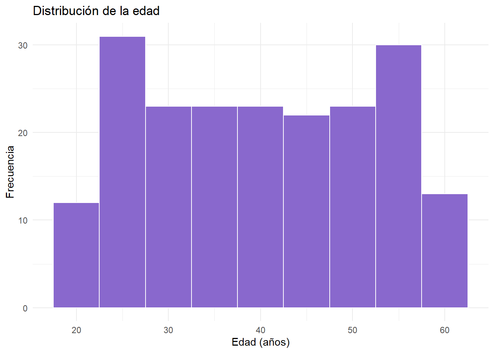
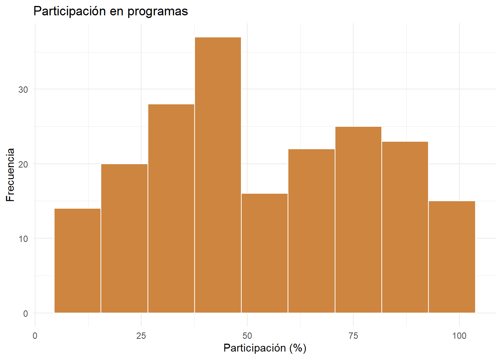

La estadística descriptiva permite organizar, resumir, analizar y presentar información mediante tablas, medidas numéricas y representaciones gráficas. En este taller se estudia una base de datos relacionada con personas vinculadas a diferentes sectores de la administración pública.
El análisis se realiza con el archivo Excel sector.xlsx, que contiene 200 registros y 10 variables. Los resultados se calculan desde los datos originales; por ello, las tablas y los gráficos se actualizan cuando se modifica el Excel y se vuelve a renderizar este documento.
Objetivo general
Realizar un análisis estadístico descriptivo de los registros de la base de datos, mediante distribuciones de frecuencias, medidas de tendencia central, medidas de dispersión y gráficos.
Objetivos específicos
Identificar y clasificar las variables según el diccionario del taller.
Construir tablas de frecuencias absolutas, relativas, porcentuales y acumuladas cuando corresponda.
Representar gráficamente las variables cualitativas y cuantitativas.
Calcular medidas de tendencia central y dispersión para las variables numéricas.
Agrupar las variables cuantitativas continuas mediante la regla de Sturges.
Interpretar los resultados con base en los registros observados.
2 Fuente de información y revisión de la base
La fuente de información es el archivo Excel sector.xlsx, hoja Sheet1. La base contiene 200 observaciones y 10 variables.
Ver código
resumen_base <-data.frame(Indicador =c("Número de observaciones", "Número de variables","Valores faltantes", "Variables cualitativas","Variables cuantitativas"),Resultado =c(n_registros, n_variables, total_faltantes,length(variables_nominales) +length(variables_ordinales),length(variables_numericas)))knitr::kable(resumen_base, caption ="Resumen general de la base de datos") |> kableExtra::kable_styling(full_width =FALSE, bootstrap_options =c("striped", "hover"))
Resumen general de la base de datos
Indicador
Resultado
Número de observaciones
200
Número de variables
10
Valores faltantes
0
Variables cualitativas
4
Variables cuantitativas
6
Ver código
knitr::kable(head(datos, 10), caption ="Primeros diez registros de la base") |> kableExtra::kable_styling(full_width =TRUE, bootstrap_options =c("striped", "hover"))
Primeros diez registros de la base
Sector_Laboral
Nivel_Ingresos
Satisfaccion_Servicio
Frecuencia_Participacion
Anos_Experiencia
Numero_Hijos
Salario
Satisfaccion_Laboral
Edad
Participacion_Programas
Educación
Baja
Satisfecho
Siempre
17
5
4541
2.03
56
0.347
Seguridad
Alta
Satisfecho
Siempre
18
4
2077
1.95
27
0.125
Transporte
Baja
Insatisfecho
Rara vez
19
2
3376
0.74
31
0.484
Seguridad
Alta
Satisfecho
Nunca
20
4
4273
1.35
46
0.436
Administrativo
Alta
Muy Satisfecho
A veces
7
4
4520
2.14
36
0.142
Seguridad
Baja
Insatisfecho
Rara vez
18
3
4715
0.78
46
0.742
Transporte
Alta
Muy Insatisfecho
A veces
8
4
4660
2.45
49
0.437
Educación
Alta
Insatisfecho
Frecuentemente
8
2
2691
1.78
46
0.108
Sector Salud
Media
Muy Insatisfecho
Rara vez
18
5
2100
1.87
58
0.812
Seguridad
Alta
Insatisfecho
Nunca
6
1
1990
1.01
23
0.953
Revisión de calidad. En el archivo recibido se identificaron 0 valores faltantes. Las variables requeridas están presentes y la base contiene 200 registros y 10 columnas. La revisión se vuelve a ejecutar automáticamente al renderizar.
3 Diccionario y clasificación de variables
Variable
Tipo
Descripción
Sector_Laboral
Cualitativa nominal
Sector: Salud, Educación, Transporte, Seguridad y Administrativo.
Nivel_Ingresos
Cualitativa ordinal
Nivel de ingresos: Baja, Media y Alta.
Satisfaccion_Servicio
Cualitativa ordinal
Muy Insatisfecho, Insatisfecho, Neutral, Satisfecho y Muy Satisfecho.
Frecuencia_Participacion
Cualitativa ordinal
Nunca, Rara vez, A veces, Frecuentemente y Siempre.
Anos_Experiencia
Cuantitativa discreta
Años de experiencia laboral.
Numero_Hijos
Cuantitativa discreta
Número de hijos registrados.
Salario
Cuantitativa continua
Salario mensual en miles de pesos; 1.000 equivale a $1.000.000 COP.
Satisfaccion_Laboral
Cuantitativa continua
Puntaje de satisfacción laboral.
Edad
Cuantitativa continua*
Edad en años; en el archivo se registra en números enteros.
Participacion_Programas
Cuantitativa continua
Proporción de participación, entre 0 y 1.
Se conserva la clasificación del diccionario de variables, aunque la edad observada esté expresada en años enteros.
4 Distribución de frecuencias: conceptos y fórmulas
La frecuencia absoluta ((f_i)) cuenta las observaciones de una categoría o intervalo. La frecuencia relativa ((h_i)) expresa la proporción correspondiente y el porcentaje se obtiene multiplicando esa proporción por 100.
[ h_i = p_i = ]
La frecuencia absoluta acumulada suma las frecuencias hasta la categoría (i), y la frecuencia relativa acumulada suma las proporciones hasta esa misma categoría:
[ F_i = {j=1}^{i} f_j H_i = {j=1}^{i} h_j ]
Para agrupar datos cuantitativos se emplea la regla de Sturges:
[ k = 1 + 3.322_{10}(n) ]
El rango se calcula como (R=X_{}-X_{}), y la amplitud aproximada de clase como (A=R/k). Las frecuencias acumuladas son especialmente útiles en variables ordinales y cuantitativas, porque sus categorías admiten un orden.
5 Análisis de variables cualitativas
5.1 Sector laboral
Sector_Laboral es una variable cualitativa nominal porque sus categorías no tienen un orden jerárquico.
ggplot(tabla_sector, aes(x =reorder(Categoria, -fi), y = fi, fill = Categoria)) +geom_col(show.legend =FALSE) +geom_text(aes(label = fi), vjust =-0.35) +labs(title ="Registros por sector laboral", x ="Sector laboral", y ="Frecuencia") +theme_minimal()

Interpretación. El sector con mayor número de registros es Seguridad, con 46 registros (23 %). Esta comparación describe únicamente la distribución de la base analizada.
5.2 Nivel de ingresos
Ver código
tabla_ingresos <-tabla_frecuencias(datos$Nivel_Ingresos)knitr::kable(tabla_ingresos, digits =3, caption ="Frecuencias del nivel de ingresos") |> kableExtra::kable_styling(full_width =FALSE)
Frecuencias del nivel de ingresos
Categoria
fi
hi
Porcentaje
Fi
Hi
Baja
71
0.355
35.5
71
0.355
Media
63
0.315
31.5
134
0.670
Alta
66
0.330
33.0
200
1.000
Ver código
ggplot(tabla_ingresos, aes(x = Categoria, y = fi)) +geom_col(fill ="steelblue") +geom_text(aes(label = fi), vjust =-0.35) +labs(title ="Distribución del nivel de ingresos", x ="Nivel de ingresos", y ="Frecuencia") +theme_minimal()

Interpretación. La categoría más frecuente es Baja, con 71 registros. El orden Baja–Media–Alta permite leer también las frecuencias acumuladas.
5.3 Satisfacción con el servicio
Ver código
tabla_servicio <-tabla_frecuencias(datos$Satisfaccion_Servicio)knitr::kable(tabla_servicio, digits =3, caption ="Frecuencias de satisfacción con el servicio") |> kableExtra::kable_styling(full_width =FALSE)
Frecuencias de satisfacción con el servicio
Categoria
fi
hi
Porcentaje
Fi
Hi
Muy Insatisfecho
43
0.215
21.5
43
0.215
Insatisfecho
40
0.200
20.0
83
0.415
Neutral
37
0.185
18.5
120
0.600
Satisfecho
38
0.190
19.0
158
0.790
Muy Satisfecho
42
0.210
21.0
200
1.000
Ver código
ggplot(tabla_servicio, aes(x = Categoria, y = fi)) +geom_col(fill ="mediumpurple3") +geom_text(aes(label = fi), vjust =-0.35) +labs(title ="Satisfacción con el servicio", x ="Respuesta", y ="Frecuencia") +theme_minimal() +theme(axis.text.x =element_text(angle =20, hjust =1))

Interpretación. La respuesta más frecuente es Muy Insatisfecho, con 43 registros. La escala ordenada permite observar la distribución desde la insatisfacción hasta la satisfacción.
ggplot(tabla_participacion, aes(x = Categoria, y = fi)) +geom_col(fill ="tan3") +geom_text(aes(label = fi), vjust =-0.35) +labs(title ="Frecuencia de participación", x ="Frecuencia declarada", y ="Registros") +theme_minimal() +theme(axis.text.x =element_text(angle =20, hjust =1))

Interpretación. La respuesta más frecuente es Siempre, con 48 registros. La escala va de Nunca a Siempre y facilita identificar la frecuencia de participación más común.
6 Análisis de variables cuantitativas
6.1 Medidas de tendencia central y dispersión
La media aritmética se calcula sumando los valores y dividiendo entre el número de observaciones. La mediana es el valor central de los datos ordenados y la moda corresponde al valor que más se repite.
[ {x}= ]
La varianza muestral, la desviación estándar, el rango y el coeficiente de variación permiten describir la dispersión:
[ s2=\frac{_{i=1}{n}(x_i-{x})^2}{n-1} s= CV= ]
Ver código
tabla_descriptiva <- dplyr::bind_rows(lapply(variables_numericas, function(v) { x <- datos[[v]] x <- x[!is.na(x)]data.frame(Variable = v, n =length(x),Minimo =min(x), Maximo =max(x),Media =mean(x), Mediana =median(x),Moda =moda_valor(x),Desviacion_estandar =sd(x),Varianza =var(x),Rango =diff(range(x)),Coeficiente_variacion =if (mean(x) !=0) sd(x) /mean(x) *100elseNA_real_ )}))knitr::kable(tabla_descriptiva, digits =3,caption ="Medidas descriptivas de las variables cuantitativas") |> kableExtra::kable_styling(full_width =TRUE, bootstrap_options =c("striped", "hover"))
Medidas descriptivas de las variables cuantitativas
tabla_experiencia <-tabla_frecuencias(datos$Anos_Experiencia)knitr::kable(tabla_experiencia, digits =3, caption ="Frecuencias de años de experiencia") |> kableExtra::kable_styling(full_width =FALSE)
Frecuencias de años de experiencia
Categoria
fi
hi
Porcentaje
Fi
Hi
0
9
0.045
4.5
9
0.045
1
21
0.105
10.5
30
0.150
2
5
0.025
2.5
35
0.175
3
7
0.035
3.5
42
0.210
4
3
0.015
1.5
45
0.225
5
10
0.050
5.0
55
0.275
6
11
0.055
5.5
66
0.330
7
6
0.030
3.0
72
0.360
8
17
0.085
8.5
89
0.445
9
9
0.045
4.5
98
0.490
10
9
0.045
4.5
107
0.535
11
11
0.055
5.5
118
0.590
12
11
0.055
5.5
129
0.645
13
7
0.035
3.5
136
0.680
14
10
0.050
5.0
146
0.730
15
7
0.035
3.5
153
0.765
16
10
0.050
5.0
163
0.815
17
7
0.035
3.5
170
0.850
18
10
0.050
5.0
180
0.900
19
10
0.050
5.0
190
0.950
20
10
0.050
5.0
200
1.000
Ver código
ggplot(datos, aes(x =factor(Anos_Experiencia))) +geom_bar(fill ="steelblue") +labs(title ="Años de experiencia laboral", x ="Años", y ="Frecuencia") +theme_minimal()

6.2.2 Número de hijos
Ver código
tabla_hijos <-tabla_frecuencias(datos$Numero_Hijos)knitr::kable(tabla_hijos, digits =3, caption ="Frecuencias del número de hijos") |> kableExtra::kable_styling(full_width =FALSE)
Frecuencias del número de hijos
Categoria
fi
hi
Porcentaje
Fi
Hi
1
39
0.195
19.5
39
0.195
2
38
0.190
19.0
77
0.385
3
38
0.190
19.0
115
0.575
4
48
0.240
24.0
163
0.815
5
37
0.185
18.5
200
1.000
Ver código
ggplot(datos, aes(x =factor(Numero_Hijos))) +geom_bar(fill ="coral3") +labs(title ="Distribución del número de hijos", x ="Número de hijos", y ="Frecuencia") +theme_minimal()

6.3 Variables cuantitativas continuas: agrupación por Sturges
Las siguientes tablas se construyen usando los valores mínimo y máximo observados en cada variable y el número de clases sugerido por la regla de Sturges.
6.3.1 Salario
El salario se encuentra expresado en miles de pesos. Por ejemplo, un valor de 1.000 equivale a $1.000.000 COP.
Ver código
tabla_salario <-tabla_agrupada(datos$Salario)knitr::kable(tabla_salario, digits =3, caption ="Distribución agrupada del salario (miles de pesos)") |> kableExtra::kable_styling(full_width =FALSE)
Distribución agrupada del salario (miles de pesos)
Intervalo
Marca_clase
fi
hi
Porcentaje
Fi
Hi
[1.08e+03,1.5e+03]
1292.5
22
0.110
11.0
22
0.110
(1.5e+03,2e+03]
1750.0
17
0.085
8.5
39
0.195
(2e+03,2.5e+03]
2250.0
20
0.100
10.0
59
0.295
(2.5e+03,3e+03]
2750.0
26
0.130
13.0
85
0.425
(3e+03,3.5e+03]
3250.0
21
0.105
10.5
106
0.530
(3.5e+03,4e+03]
3750.0
28
0.140
14.0
134
0.670
(4e+03,4.5e+03]
4250.0
30
0.150
15.0
164
0.820
(4.5e+03,4.96e+03]
4731.5
36
0.180
18.0
200
1.000
Ver código
ggplot(datos, aes(x = Salario)) +geom_histogram(bins =ceiling(1+3.322*log10(sum(!is.na(datos$Salario)))),color ="white", fill ="steelblue") +labs(title ="Distribución del salario", x ="Salario (miles de pesos)", y ="Frecuencia") +theme_minimal()
ggplot(datos, aes(x = Satisfaccion_Laboral)) +geom_histogram(bins =ceiling(1+3.322*log10(sum(!is.na(datos$Satisfaccion_Laboral)))),color ="white", fill ="darkseagreen4") +labs(title ="Distribución de satisfacción laboral", x ="Puntaje", y ="Frecuencia") +theme_minimal()

6.3.3 Edad
Ver código
tabla_edad <-tabla_agrupada(datos$Edad)knitr::kable(tabla_edad, digits =3, caption ="Distribución agrupada de la edad") |> kableExtra::kable_styling(full_width =FALSE)
Distribución agrupada de la edad
Intervalo
Marca_clase
fi
hi
Porcentaje
Fi
Hi
[20,25]
22.5
31
0.155
15.5
31
0.155
(25,30]
27.5
24
0.120
12.0
55
0.275
(30,35]
32.5
24
0.120
12.0
79
0.395
(35,40]
37.5
23
0.115
11.5
102
0.510
(40,45]
42.5
25
0.125
12.5
127
0.635
(45,50]
47.5
20
0.100
10.0
147
0.735
(50,55]
52.5
30
0.150
15.0
177
0.885
(55,60]
57.5
23
0.115
11.5
200
1.000
Ver código
ggplot(datos, aes(x = Edad)) +geom_histogram(bins =ceiling(1+3.322*log10(sum(!is.na(datos$Edad)))),color ="white", fill ="mediumpurple3") +labs(title ="Distribución de la edad", x ="Edad (años)", y ="Frecuencia") +theme_minimal()

6.3.4 Participación en programas
La variable se registra como una proporción. Para expresarla en porcentaje se multiplica por cien.
Ver código
tabla_programas <-tabla_agrupada(datos$Participacion_Programas)knitr::kable(tabla_programas, digits =3, caption ="Distribución agrupada de participación en programas (proporción)") |> kableExtra::kable_styling(full_width =FALSE)
Distribución agrupada de participación en programas (proporción)
Intervalo
Marca_clase
fi
hi
Porcentaje
Fi
Hi
[0.1,0.2]
0.150
22
0.110
11.0
22
0.110
(0.2,0.3]
0.250
20
0.100
10.0
42
0.210
(0.3,0.4]
0.350
24
0.120
12.0
66
0.330
(0.4,0.5]
0.450
36
0.180
18.0
102
0.510
(0.5,0.6]
0.550
16
0.080
8.0
118
0.590
(0.6,0.7]
0.650
16
0.080
8.0
134
0.670
(0.7,0.8]
0.750
22
0.110
11.0
156
0.780
(0.8,0.9]
0.850
25
0.125
12.5
181
0.905
(0.9,0.982]
0.941
19
0.095
9.5
200
1.000
Ver código
ggplot(datos, aes(x = Participacion_Programas *100)) +geom_histogram(bins =ceiling(1+3.322*log10(sum(!is.na(datos$Participacion_Programas)))),color ="white", fill ="tan3") +labs(title ="Participación en programas", x ="Participación (%)", y ="Frecuencia") +theme_minimal()

7 Comparación y lectura general de resultados
La siguiente tabla resume las variables numéricas y permite comparar sus medidas principales.
Ver código
indicadores <- tabla_descriptiva |> dplyr::select(Variable, n, Media, Mediana, Desviacion_estandar, Minimo, Maximo)knitr::kable(indicadores, digits =2, caption ="Indicadores principales de las variables cuantitativas") |> kableExtra::kable_styling(full_width =TRUE)
Indicadores principales de las variables cuantitativas
Variable
n
Media
Mediana
Desviacion_estandar
Minimo
Maximo
Anos_Experiencia
200
9.84
10.00
6.15
0.00
20.00
Numero_Hijos
200
3.03
3.00
1.40
1.00
5.00
Salario
200
3235.87
3412.00
1168.60
1085.00
4963.00
Satisfaccion_Laboral
200
1.60
1.61
0.54
0.54
2.50
Edad
200
39.92
39.50
11.92
20.00
60.00
Participacion_Programas
200
0.54
0.50
0.26
0.10
0.98
Lectura de los resultados. La base registra 200 observaciones distribuidas en cinco sectores laborales. En el análisis cualitativo, las tablas permiten identificar la categoría más frecuente en cada variable y comparar su peso porcentual. En el análisis cuantitativo, la media y la mediana describen la tendencia central, mientras que la desviación estándar, la varianza y el rango muestran la dispersión.
Los resultados describen exclusivamente los registros del archivo Excel suministrado. No deben interpretarse como estimaciones representativas de todas las personas vinculadas a la administración pública, porque el archivo no aporta información sobre un diseño muestral que permita hacer esa generalización.
8 Conclusiones
La estadística descriptiva facilita organizar y comprender la información de la base mediante tablas, medidas y gráficos.
La clasificación de las variables determina qué procedimientos estadísticos son apropiados: las variables nominales se comparan por categorías, las ordinales respetan un orden y las cuantitativas permiten cálculos numéricos.
Las medidas de tendencia central resumen los valores típicos, mientras que las medidas de dispersión muestran qué tan separados se encuentran los datos.
La agrupación mediante la regla de Sturges permite presentar de forma ordenada las variables cuantitativas continuas.
La interpretación debe limitarse a los 200 registros analizados y a la información efectivamente contenida en el Excel.
9 Anexo: cómo actualizar y generar el informe
Para que el proyecto funcione correctamente, mantenga en una misma carpeta estos tres archivos:
index.qmd (este documento).
sector.xlsx (base de datos original).
Logo_Esap.png (imagen institucional).
Abra index.qmd en RStudio con Quarto instalado y seleccione Render. También puede ejecutar en la consola:
Ver código
# Instale Quarto desde https://quarto.org/docs/get-started/# Luego, en la terminal de RStudio:# quarto render index.qmd
El resultado será un archivo index.html en la misma carpeta. Si actualiza los registros del Excel, vuelva a ejecutar Render para recalcular las tablas, medidas y gráficos.